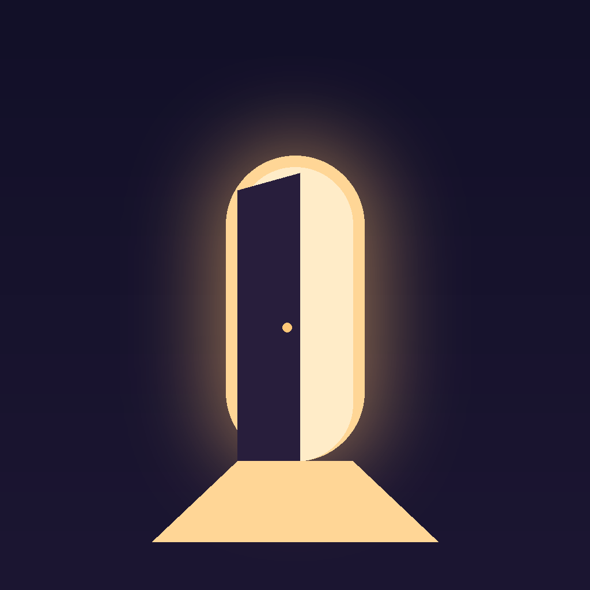

Zihin Odası is a small personal tool that publishes short videos to the Zihin Odası TikTok account. The videos are AI-generated fictional stories and short-form content created by the account owner.
The tool uses TikTok Login Kit to connect the owner's own TikTok account and the Content Posting API to publish videos on a schedule. Every video is labeled as AI-generated content. The tool is not offered to the public and does not collect data from other TikTok users.